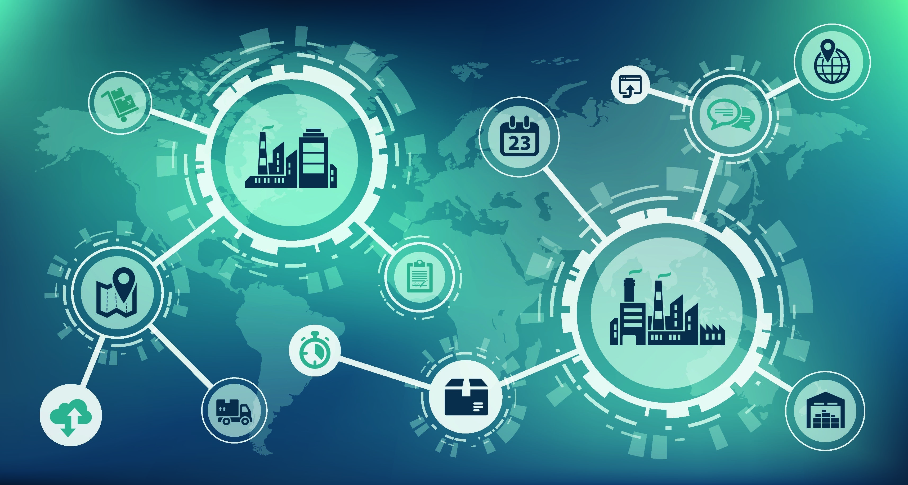
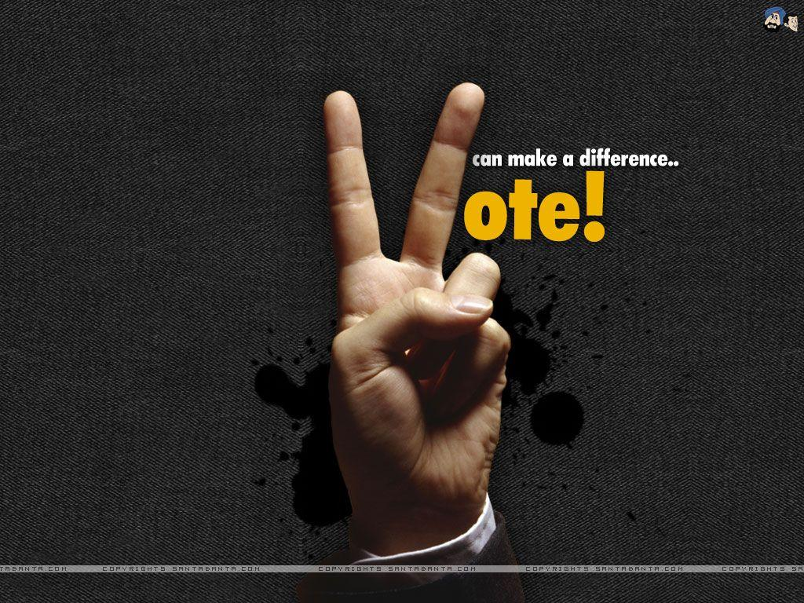
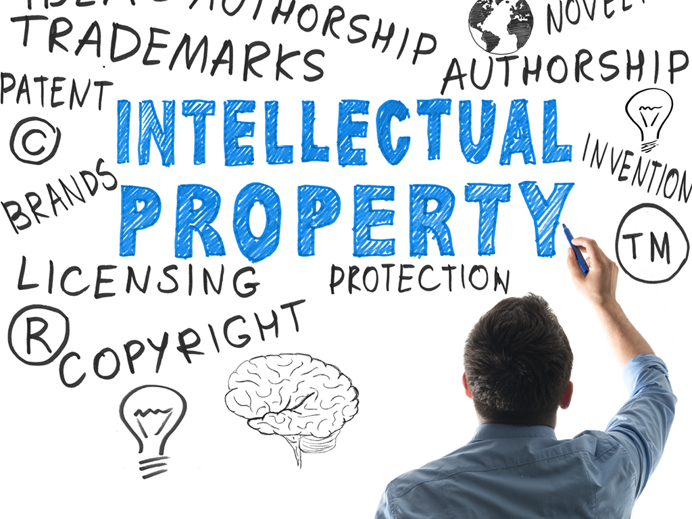

Blockchain technology can revolutionize supply chain management by providing transparency and traceability. It allows for real-time tracking of goods, reduces fraud and counterfeiting, and enhances trust among participants in the supply chain.
With blockchain, companies can record and track each step of a product's journey, from raw material sourcing to manufacturing, distribution, and delivery. Every transaction and interaction can be securely stored on the blockchain, providing an immutable record. This transparency helps identify inefficiencies, optimize processes, and build trust with consumers by verifying the authenticity and quality of products.
Blockchain can improve healthcare systems by securely storing and sharing patient data, ensuring privacy, and enabling interoperability between different healthcare providers. It can also streamline the management of pharmaceutical supply chains and clinical trials.
In healthcare, patient data can be securely stored and shared on a blockchain network, giving patients control over their medical records and enabling seamless access for authorized healthcare providers. Blockchain's decentralized nature ensures data integrity and protection against unauthorized access or tampering. Moreover, blockchain can streamline the pharmaceutical supply chain by enabling real-time tracking of drugs, reducing counterfeiting, and ensuring the authenticity of medications. Additionally, blockchain-based smart contracts can streamline and automate the management of clinical trials, ensuring transparency and accuracy in data collection and analysis.
Blockchain technology has the potential to enhance the security and transparency of voting systems. It can enable verifiable and tamper-proof voting records, reduce the risk of fraud, and increase public trust in the democratic process.
By using blockchain for voting systems, every vote can be securely recorded and stored on an immutable ledger, preventing tampering or alteration. Each voter can have a unique digital identity, ensuring that only eligible individuals can participate. Blockchain-based voting systems provide transparency, allowing voters to verify the accuracy of the results independently. It can also streamline the vote counting process, reducing the time required for results declaration. Overall, blockchain-based voting systems have the potential to improve election integrity and enhance trust in the democratic process.
Blockchain can be used to create a decentralized and immutable registry of intellectual property rights. It can enable artists, musicians, writers, and inventors to securely register and protect their creations, preventing unauthorized use and ensuring fair compensation.
With blockchain, creators can timestamp their work and store the proof of ownership on an immutable ledger. This provides strong evidence of authorship and helps protect intellectual property rights. Artists can register their artwork on a blockchain, creating a digital certificate of authenticity that verifies the uniqueness and provenance of the piece. Smart contracts can automate licensing and royalty payments, ensuring fair compensation and reducing reliance on intermediaries. Blockchain-based intellectual property protection empowers creators and promotes a more efficient and transparent ecosystem for creative industries.
Cryptocurrencies, such as Bitcoin and Ethereum, are built on blockchain technology and have transformed the financial landscape. They enable secure, peer-to-peer transactions, lower fees, and increased financial inclusion. Additionally, blockchain-based smart contracts can automate complex financial agreements and eliminate the need for intermediaries.
Cryptocurrencies provide an alternative form of digital money that is decentralized and operates on a secure blockchain network. They allow individuals to send and receive funds globally, bypassing traditional banking systems and reducing transaction costs. Blockchain's transparency ensures that transactions can be verified and audited by anyone, enhancing trust and reducing the risk of fraud. Furthermore, blockchain-based smart contracts can automate and enforce financial agreements without the need for intermediaries, improving efficiency and reducing costs in areas such as lending, insurance, and asset management. The emergence of cryptocurrencies and blockchain technology has the potential to reshape the financial services industry and promote financial inclusion on a global scale.